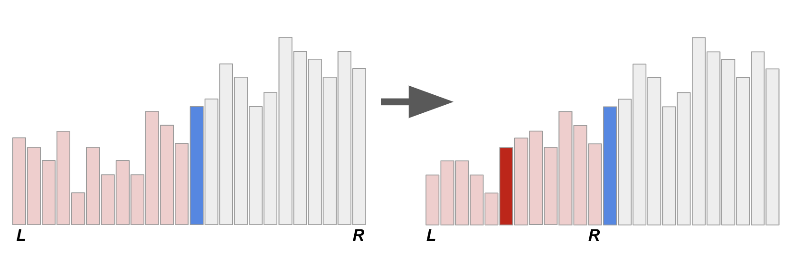
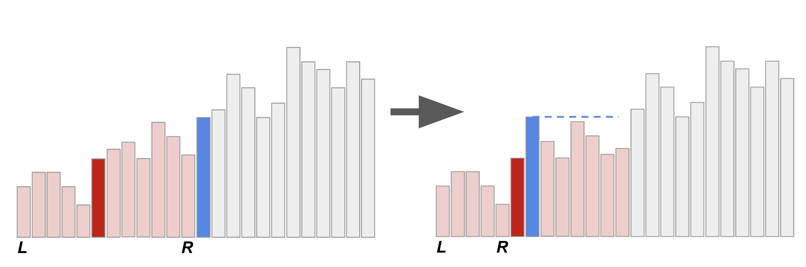

快速排序法
另一個利用分而治之達成的排序方法，是快速排序法（Quick Sort）。
如果我們能將輸入的數值分成兩組，並且保證某一組的所有數字都不超過另一組的所有數字。 那麼，把這兩組數字分別遞迴下去排序，再接起來就可以了。 通常分組的方法是透過指定衛兵（pivot）的形式，比衛兵小的放一堆、比衛兵大的放另一堆。
分組的方法非常多種，這裡的寫法是直接指定第一個數字為 pivot，然後逐一掃過所有元素。 如果一個元素比 pivot 大的話，就把它換到最後面，否則就跟 pivot 交換（放到左邊）。 咦？如果有跟衛兵相同的怎麼辦？基本上我們必須排除與衛兵相同的資料值，所以遞迴的時候必須要把小於、等於、大於這三種情況分清楚。
void QuickSort(data_t *A, int n) {
if (n <= 1) return;
int pivot_pos = 0;
int right_boundary = n - 1;
int now = 1;
// 把資料分成小於、等於、大於 pivot 等三堆。
while (now <= right_boundary) {
if (A[now] < A[pivot_pos]) {
swap(A[now++], A[pivot_pos++]);
} else if (A[now] == A[pivot_pos]) {
++now;
} else {
swap(A[now], A[right_boundary--]);
}
}
QuickSort(A, pivot_pos); // 嚴格小於 pivot 的元素們。
QuickSort(A + now, n - now); // 嚴格大於 pivot 的元素們。
}
最差時間複雜度
引理 12
快速排序法的時間複雜度為 。
證明
注意到，對於任何一筆資料，在所有 QuickSort 函式的呼叫中最多只有一次會被當作 pivot 拿來比較。 而 QuickSort 的執行時間正比於： 情形的遞迴呼叫次數、以及拿 pivot 出來跟別人比較的總次數。 前者是 次函式呼叫，後者每個元素至多被拿來當作一次 pivot，每次 pivot 至多會跟 個元素進行比較。 因此時間複雜度為 。
另一方面，考慮 這個逆序的序列。每一次遞迴都會把最大的數字推到最右邊，因此每一層遞迴要處理的資料量依序為 。這樣加起來就是 。
快速排序法不是原地演算法
雖然上面把資料分堆的部分，看起來只需要 的記憶體空間。但遞迴呼叫會在使用呼叫堆疊（Call Stack），在最糟情形下仍會使用 的額外記憶體空間。相當慘烈。此外，要把快速排序法改成非遞迴的形式，其實就有點痛苦了，不像是合併排序法那樣可以輕易地變成 bottom-up 的迭代形式。
Ďurian 快速排序法
一般來說，把一個遞迴函式無腦改成非遞迴函式，最簡單的方式就是手動模擬呼叫堆疊的行為。 但事實上，今天來跟大家分享一個捷克學生 Branislav Ďurian 在 1986 年提出的改編版快速排序法。 其核心想法是利用 pivot 當作擋板，找出目前遞迴到的子問題邊界。這麼一來，就不需要使用堆疊來存放邊界了！

上圖示意著原本的快速排序法的遞迴呼叫過程，其中 L 和 R 表示的是當下的子問題邊界、而藍色和紅色底的兩條代表著兩次遞迴所選取的 pivot。 大家可以想想看，如果不知道邊界的情形下（或者，只記得剛才處理的子問題邊界），要怎麼找回 pivot。 如果是已分派好的 pivot，其實扮演著樞紐的功能：在它左邊的元素都比較小、在它右邊的元素都比較大。 所以其實可以用線性時間掃過去，花費 的時間來找出樞紐。（要做到線性時間+常數額外記憶體需要一點點挑戰性，朋友們不妨思考看看） 不過這麼一來，就算我們在「遞迴的底層」（資料規模很小的子問題）仍然需要花費 的時間找出樞紐，沒什麼效率。
相反地，如果我們只花 的時間找出下一個要處理的子問題，整體的時間就不會變了！ 改變目前遞迴子問題的情況只有兩種：一個是往下遞迴（比 pivot 小的那一組數字）、另一個是在遞迴結束後，需要移動到上一層（或上好幾層）的比 pivot 大的那一組數字。第一種情形相當好處理，在往下遞迴之前你已經有目前 pivot 的位置了！
難就難在第二種情形。一個子問題搞定以後，如果要繼續排序，下一個要搞定的子問題總是會粘著目前子問題的右界。 換句話說，我們其實已經知道下一個要處理的子問題左界在哪裡了！ 要怎麼做到還原右邊界這件事呢？Ďurian 提出了一個絕妙的方法：在向下遞迴之前，偷偷把前一層的 pivot 換到目前 pivot 右邊。 以下圖為例，我們把藍色 pivot 調到紅色 pivot 右邊！

當我們做完右圖的 子問題以後，要怎麼還原藍色 pivot 的正確位置呢？ 由於已知藍色 pivot 的位置，這時候就變得相當單純了！我們就拿著這個藍色 pivot 往右邊刷，刷到第一個不比它小的數字就停下來。 這麼一來就可以準確還原右界了！而且不需要任何堆疊或額外的記憶體空間！
快速排序法的最差情形是 ，乍看之下很沒有效率啊。 但其實這個演算法相當有用啊，不致於這麼差吧──大家平常在說的快速排序法可以做到 是怎麼一回事？
參考資料
- 郭至軒的（厲害而詳盡的）筆記：https://blog.kuoe0.tw/posts/2013/03/15/sort-about-quick-sort/
- 非遞迴、不堆疊的快速排序法：https://link.springer.com/chapter/10.1007/BFb0016252